Texto extraído da edição fornecida, sem atualização normativa. Consulte a página original para conferir tabelas, formulários e instruções ilustradas. A numeração dos links corresponde à página do arquivo PDF.
Esta página contém conteúdo gráfico. Consulte a reprodução original abaixo.
Ver página original — tabelas, imagens e diagramas
Esta página contém conteúdo gráfico. Consulte a reprodução original abaixo.
Ver página original — tabelas, imagens e diagramas
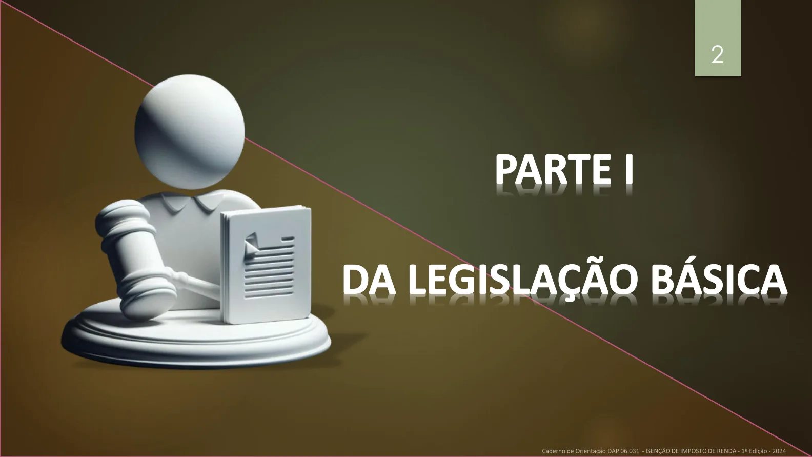
É dever do servidor/empregado público, da Organização Militar (OM) e da Região Militar (RM) ler e
acompanhar a atualização da legislação que se refere aos assuntos tratados neste Caderno de
Orientação.
Lei nº 7.713, de 22 de
dezembro de 1988 (inciso
XIV do art. 6º, alterado
pela Lei nº 11.052, de 29
de dezembro de 2004)
Lei nº 8.541, de 23 de
dezembro de 1992
Lei nº 9.250, de 26 de
dezembro de 1995
Instrução Normativa nº
1.500/RFB, de 29 de
outubro de 2014
Portaria GM-MD Nº
3.551, de 26 de agosto
de 2021
Ver página original — tabelas, imagens e diagramas
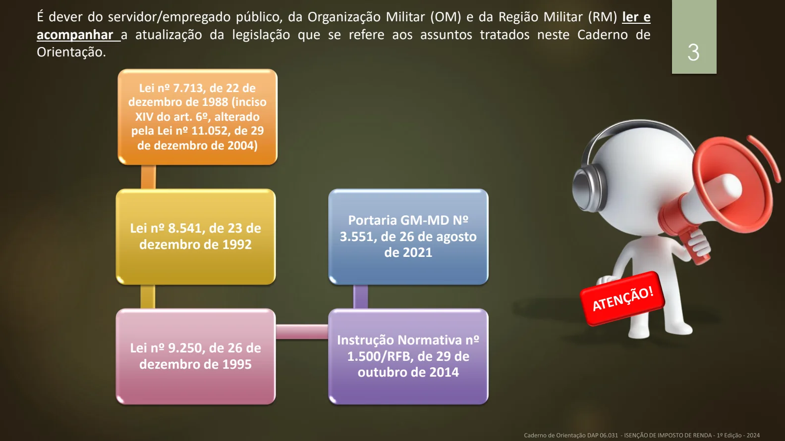
Conceitos e informações gerais
PDF · p. 4Esta página contém conteúdo gráfico. Consulte a reprodução original abaixo.
Ver página original — tabelas, imagens e diagramas
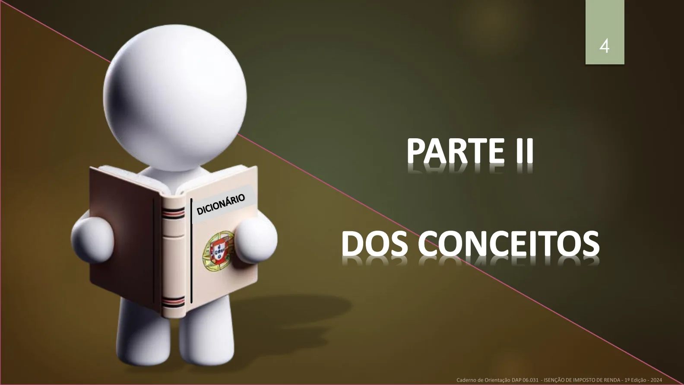
Conceitos e informações gerais
PDF · p. 5INCAPACIDADE: é a perda temporária ou definitiva pelo inspecionado da capacidade
laboral em decorrência das repercussões clínicas de determinada patologia
INVALIDEZ: é a perda definitiva pelo inspecionado das condições mínimas de saúde para
o exercício de qualquer atividade laboral formal. Nos casos de inspecionados em
atividade, pensionistas e dependentes, o enquadramento em invalidez obedece a
parâmetros clínico-funcionais específicos para cada caso, comprovada a repercussão da
doença sobre a capacidade laboral em caráter amplo e definitivo, seja por doença
especificada em lei ou não. Para a avaliação de inspecionados inativos, a invalidez
deverá ser avaliada pelo grau de limitação imposto pela doença especificada na
realização das atividades rotineiras inerentes às suas faixas etárias.
Ver página original — tabelas, imagens e diagramas
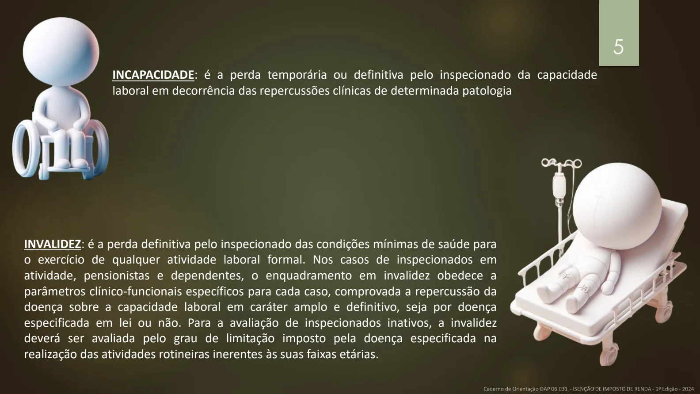
Conceitos e informações gerais
PDF · p. 6Esta página contém conteúdo gráfico. Consulte a reprodução original abaixo.
Ver página original — tabelas, imagens e diagramas
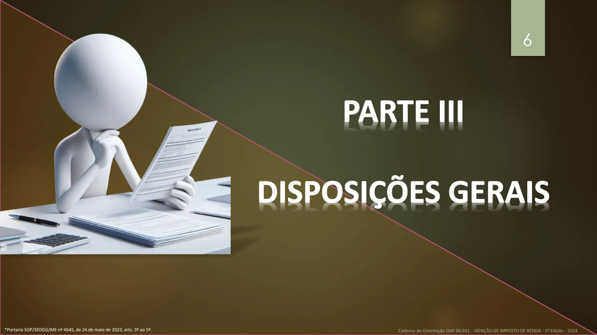
Conceitos e informações gerais
PDF · p. 7¹Portaria SGP/SEDGG/ME nº 4645, de 24 de maio de 2022, art. 53, § 1º, inciso III, alíneas “a” e “b”.
Ficam isentos do imposto de renda os seguintes rendimentos percebidos por pessoas físicas os
proventos de aposentadoria por acidente em serviço e os percebidos pelos portadores das doenças
abaixo elencadas, com base em conclusão da medicina especializada, mesmo que a doença tenha
sido contraída depois da aposentadoria :
Moléstia profissional
Tuberculose ativa
Alienação mental
Esclerose múltipla
Neoplasia maligna
Cegueira
Hanseníase
Paralisia irreversível e incapacitante
Cardiopatia grave
Doença de Parkinson
Espondiloartrose anquilosante
Nefropatia grave
Hepatopatia grave
Estados avançados da doença de Paget (osteíte
deformante)
Contaminação por radiação
Síndrome da Imunodeficiência Adquirida
Ver página original — tabelas, imagens e diagramas
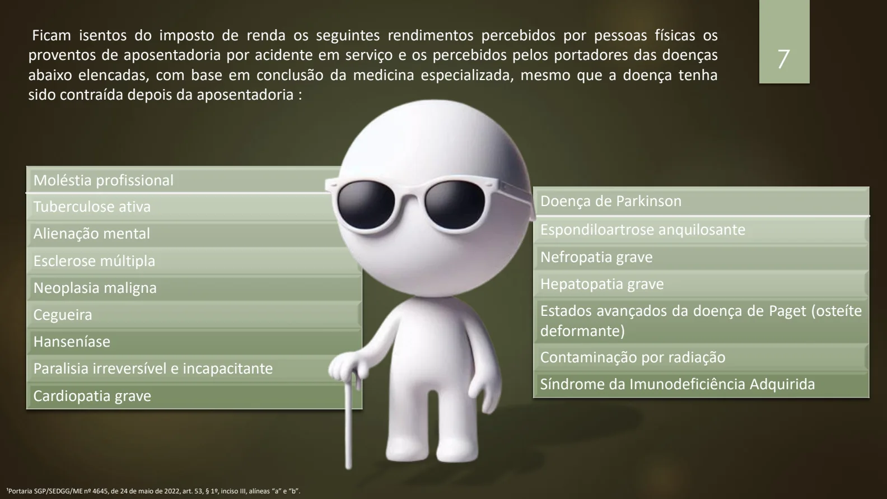
Conceitos e informações gerais
PDF · p. 8O processo deverá ter trâmite
URGENTÍSSIMO dentro do OP ,tendo
em vista o caráter emergencial
geralmente presente nos assuntos
afetos à essa área.
O contracheque do aposentado e
do pensionista civil isento do
imposto de renda deverá ser
submetido ao EXAME DE
PAGAMENTO no mês
subsequente à concessão da
isenção pela RM.
Ver página original — tabelas, imagens e diagramas
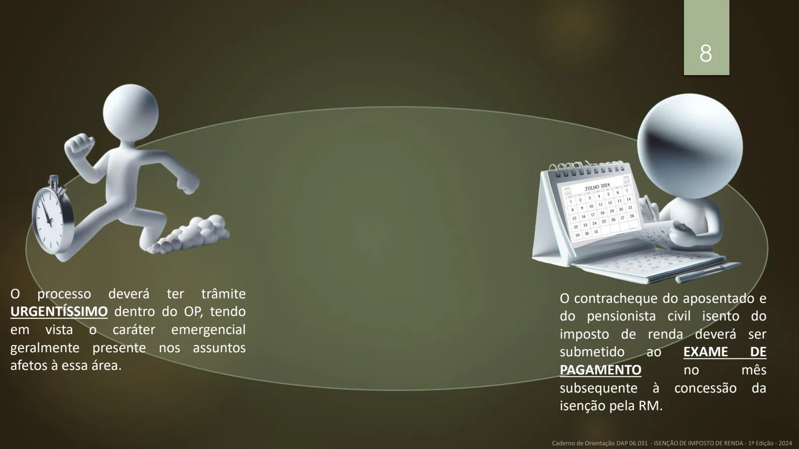
Documentos necessários
PDF · p. 9Esta página contém conteúdo gráfico. Consulte a reprodução original abaixo.
Ver página original — tabelas, imagens e diagramas
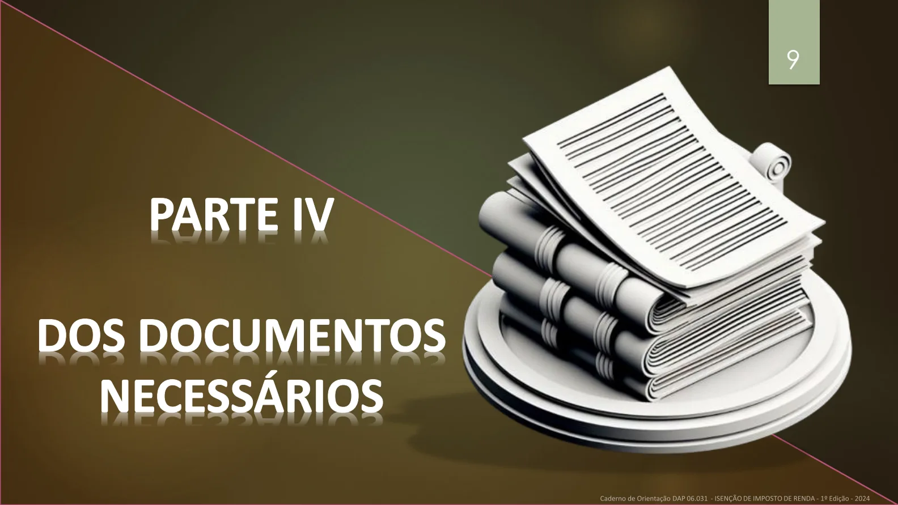
Documentos necessários
PDF · p. 10DOCUMENTO RESPONSÁVEL PELO
FORNECIMENTO OBSERVAÇÕES
Requerimento Interessado Anexo A
Cópia do Título de Inatividade ou do Título
de Pensão Civil, ou de Apostila de
Inatividade ou de Pensão, conforme o caso
Interessado -
Informação do Requerimento OM Conforme detalhamento
da próxima página
Laudo Médico emitido por médico oficial da
União, dos Estados, do Distrito Federal e dos
Municípios ou Ata de Inspeção de Saúde
emitida por Agente Médico Pericial (AMP)
acompanhado, se for o caso, da cópia da
documentação médica atualizada e
completa que comprove o diagnóstico.
Agente Médico
Pericial (AMP) ou
Serviço Médico
Oficial da União,
Estados, DF ou
Municípios
-
Parecer Técnico sobre as perícias médicas
realizadas, devidamente homologado.
OM, por meio da
Seção de Serviço de
Saúde
-
1. DOCUMENTOS NECESSÁRIOS:
Ver página original — tabelas, imagens e diagramas
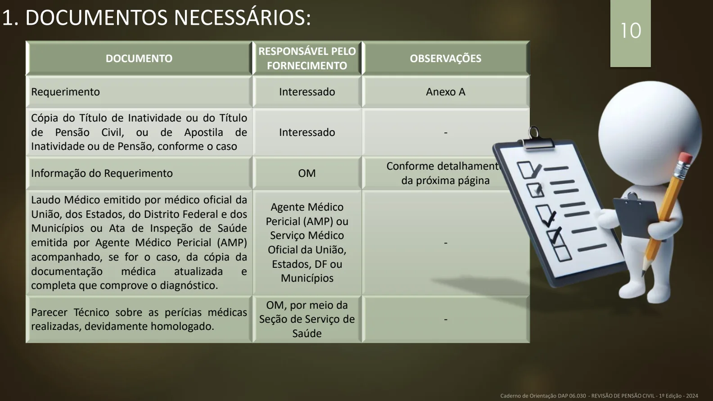
Informação no SPED
PDF · p. 11112. REDIGINDO OS DOCUMENTOS NO SPED (Informação)
1
2
3
4
Informação
5
Ver página original — tabelas, imagens e diagramas
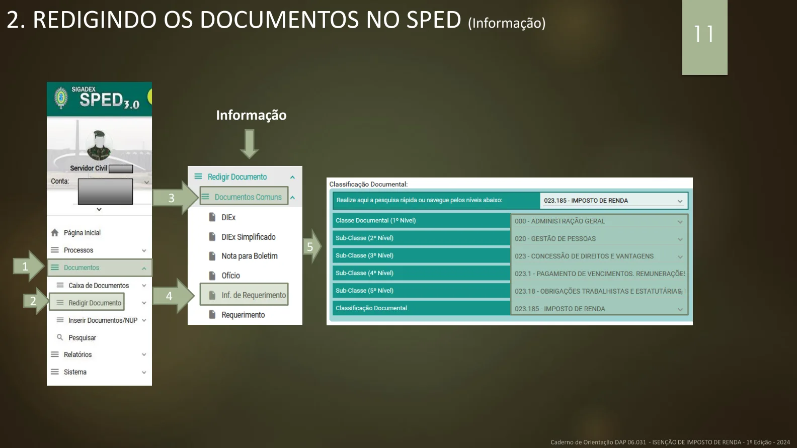
Esta página contém conteúdo gráfico. Consulte a reprodução original abaixo.
Ver página original — tabelas, imagens e diagramas
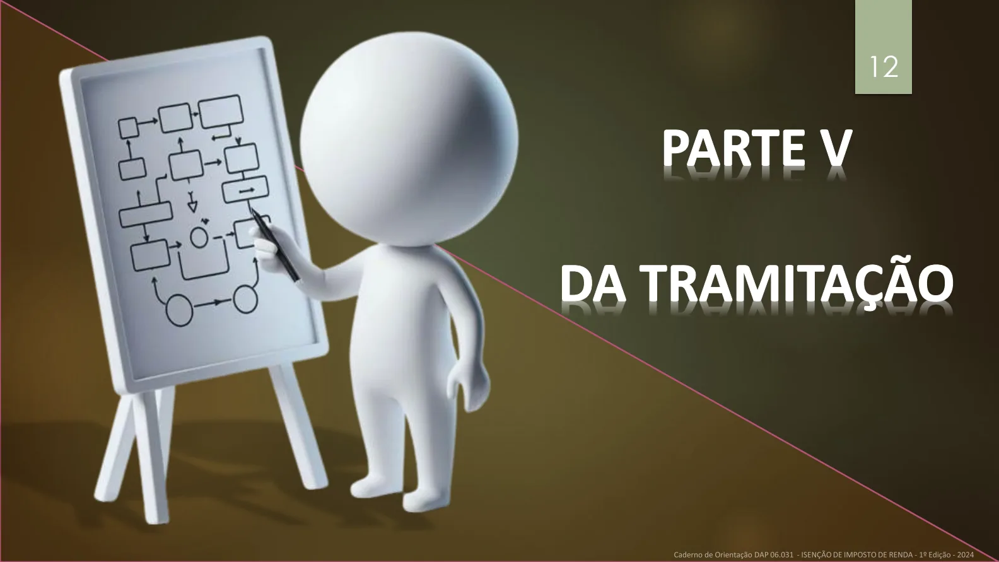
1. Receber o requerimento.
2. Encaminhar o aposentado/pensionista ao AMP , para
verificação do perfil nosológico, caso o mesmo não
apresente Laudo Médico Oficial da União, dos Estados,
do Distrito Federal e dos Municípios.
EXCEÇÃO: os casos de concessão de
aposentadoria ou de pensão por
Decisão Judicial, não transitada em
julgado.
Realizar a inspeção de saúde no requerente
encaminhado pelo OP .
Receber a Ata de Inspeção de Saúde do
AMP ou Laudo do Serviço Médico Oficial
da União, Estados, DF ou Municípios:
a) Caso o requerente esteja AMPARADO
pela legislação, instruir o processo;
b) Caso o requerente esteja
DESAMPARADO, arquivar o Laudo
Médico e/ou Laudo Médico Oficial na
pasta do requerente;
c) publicar em BI da OM e
dar ciência ao interessado;
d) Implantar, condicionalmente, o
benefício no contracheque do
requerente, caso sejam preenchidos os
requisitos legais;
e) Encaminhar o processo para a SVP .
OP
AMP
OP
Ver página original — tabelas, imagens e diagramas
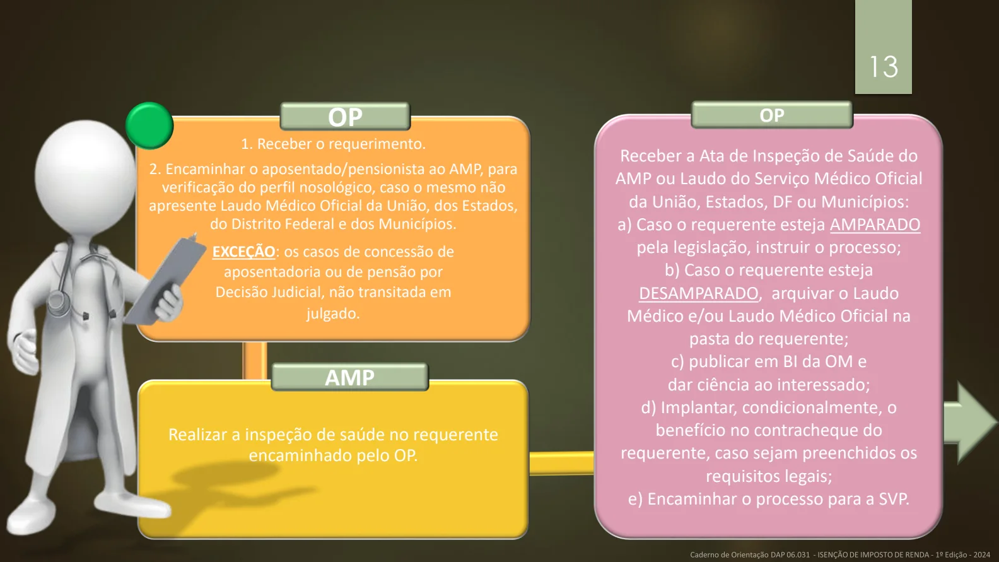
1. Conferir o processo e providenciar as
correções necessárias, se for o caso.
2. Encaminhar o processo ao serviço de
saúde da OM.
1. Auditar as perícias médicas realizadas.
2. Homologar o laudo médico pericial.
3. Emitir o parecer técnico sobre as perícias médicas
realizadas.
4. Devolver o processo para a SVP
1. Elaborar a Portaria de Concessão ou o
Despacho de Indeferimento, conforme o
caso, para assinatura do Cmt RM.
2. Publicar em Boletim e Diário Oficial da
União.
3. Remeter cópia da Portaria ou Despacho
ao OP , se for o caso.
1. Remeter à D Sau, mensalmente, até o dia 5 do mês
subsequente, a relação dos benefícios concedidos,
contendo nome e CPF dos beneficiários.
2. Conferir a documentação recebida com a publicada
no Boletim
Regional.
3. No caso de indeferimento, suspender imediatamente
o benefício.
4. Informar ao interessado a solução dada ao processo.
SVP
SERVIÇO DE SAÚDE
SVP
OP
Ver página original — tabelas, imagens e diagramas
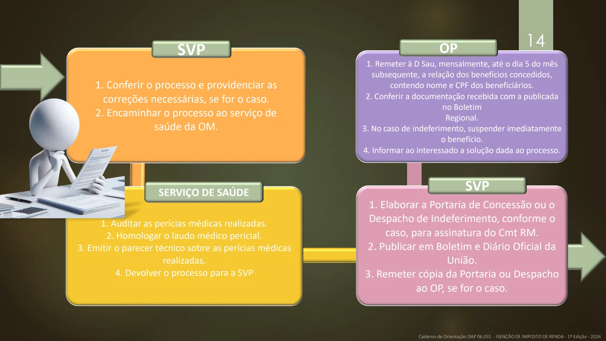
1. Auditar as perícias médicas realizadas por meio
do Sistema Informatizado de Perícias Médicas
(SIPMED) – solicitar ao serviço de saúde regional o
envio de documentação médica, quando necessário.
2. Encaminhar o resultado da auditagem à SVP .
1. Cumprir as orientações da auditagem emitidas
pela D Sau.
2. Arquivar o processo.
D Sau
SVP
Ver página original — tabelas, imagens e diagramas
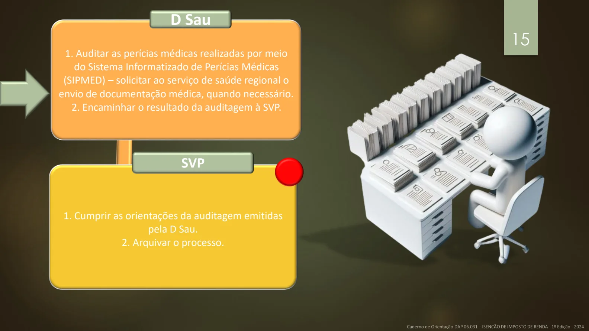
Fontes e elaboração
PDF · p. 16ELABORAÇÃO:
ASSESSORIA TÉCNICA DA SPC/DAP
SUBSEÇÃO DE APOSENTADOS E PENSIONISTAS DA SPC/DAP
JULHO DE 2024
Para conhecer melhor o assunto, leia as
legislações indicadas no início deste caderno, disponíveis no link:
https://legis.sigepe.gov.br/legis/pesquisa-avancada
Ver página original — tabelas, imagens e diagramas
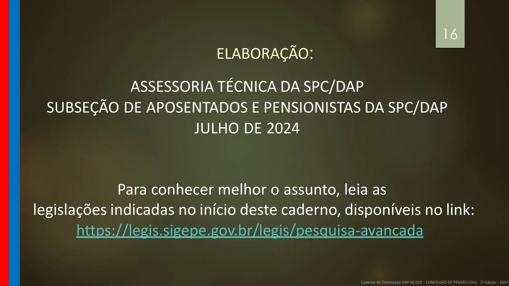
Anexo A — requerimento
PDF · p. 17ANEXO A
Requerimento - Isenção de Imposto de Renda
MINISTÉRIO DA DEFESA
EXÉRCITO BRASILEIRO
(escalões hierárquicos até a OM expedidora)
(Denominação histórica)
REQUERIMENTO - ISENÇÃO DE IMPOSTO DE RENDA
EB: 00000.000000/0000 - 00
Do (nome do servidor civil)
Ao Sr Cmt da RM
Objeto: isenção de imposto de renda
1. Fulano de tal ____________________________ (nome do interessado),
(inativo/pensionista), matrícula SIAPE nº _______________, vinculado ao (OP), requer a isenção de
imposto de renda, conforme previsto no artigo 104 da Lei nº 8.112/90.
2. Tal solicitação encontra amparo___________________________(informar legislação
vigente sobre o assunto)
3. É a primeira (segunda ou terceira) vez que requer.
, de de 20 .
Assinatura do requerente
Nome do requerente
Ver página original — tabelas, imagens e diagramas
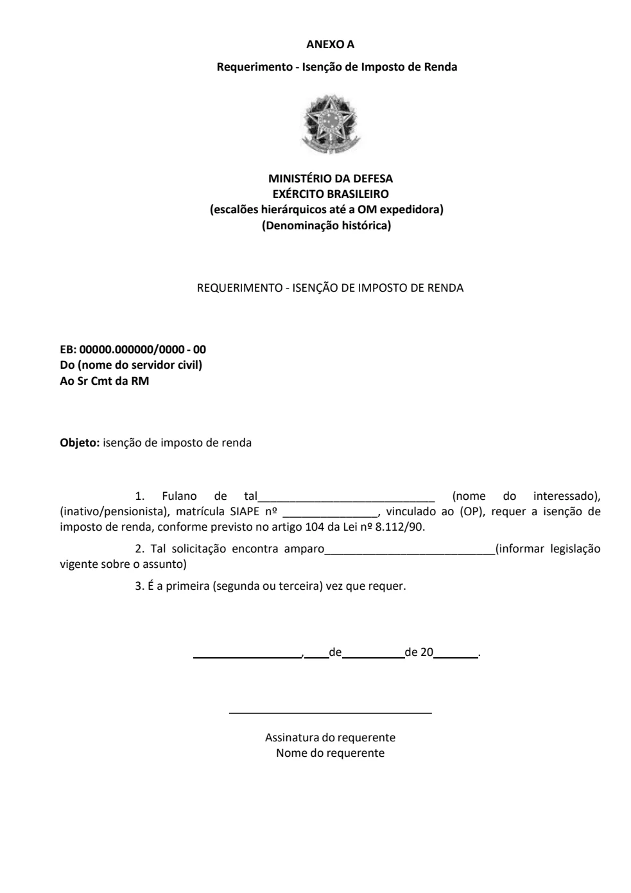